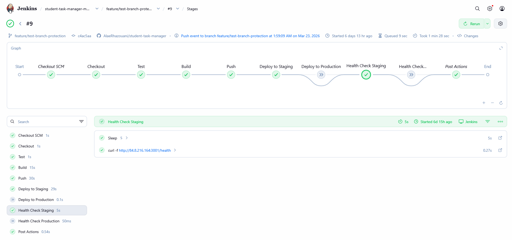
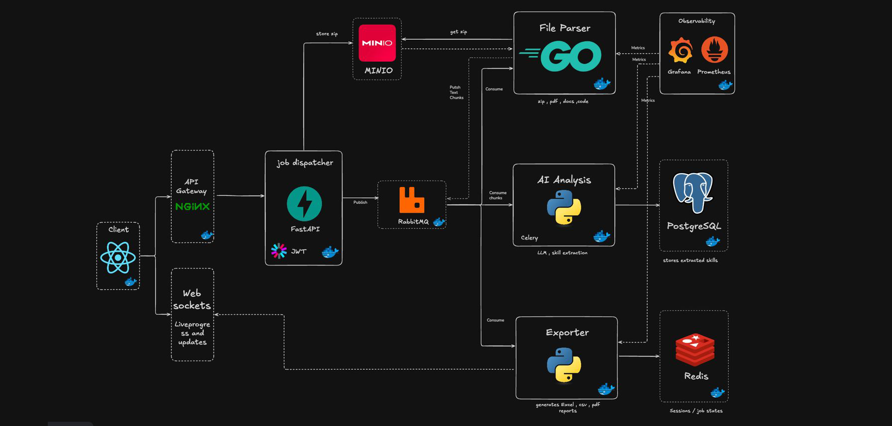
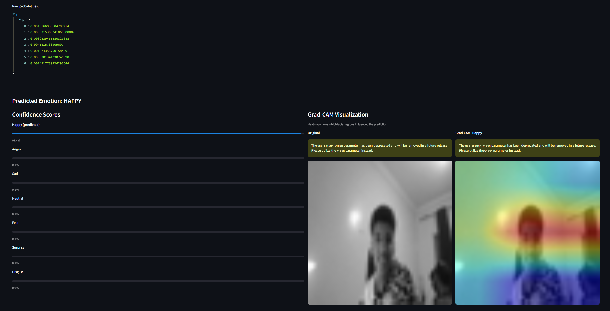
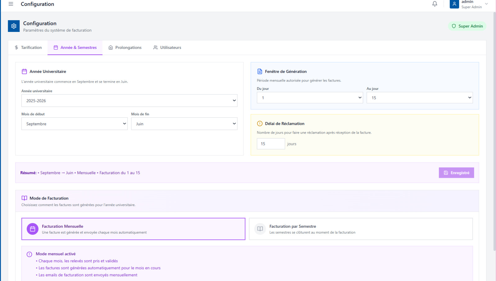
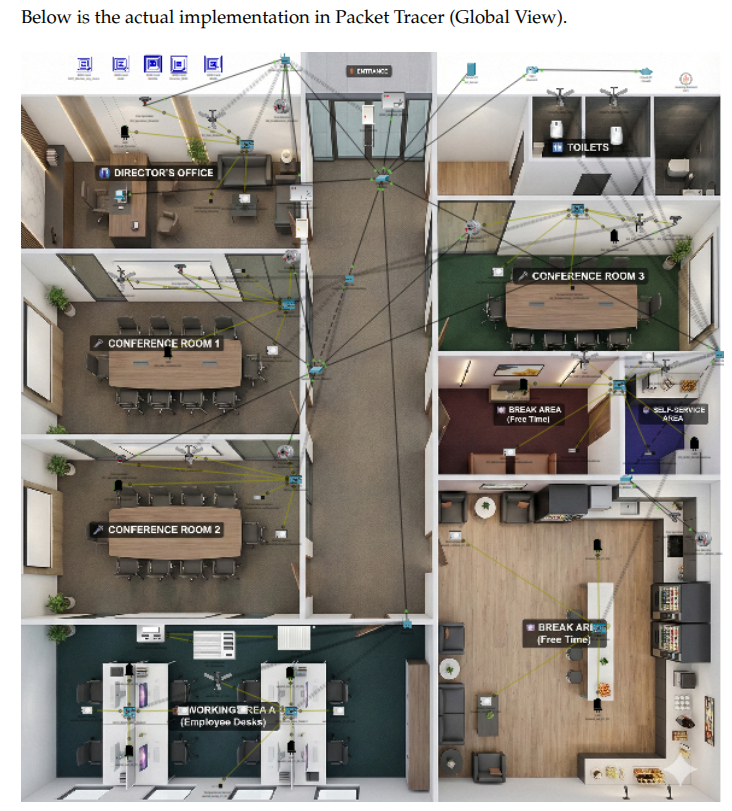

Projects_

CI/CD Pipeline & Monitoring — Student Task Manager · February 2026
Built a full Jenkins CI/CD pipeline for a 3-microservice Flask + PostgreSQL app containerized with Docker Compose and deployed on Oracle Cloud. The pipeline automates build, pytest testing, GHCR image push, and SSH deployment — with automatic rollback on failure. Includes staging/production separation, Discord notifications, and real-time Prometheus + Grafana monitoring with custom dashboards and alerts.

IA Matrice de Compétences · CGI Maroc March 2026 - In progress
Built a hybrid RAG pipeline analyzing multi-language code repositories and Office/PDF documents to automatically score developer skills. Uses DeepSeek-Coder + Mistral 7B via Ollama with CodeBERT/BGE-m3 embeddings and pgvector for semantic search. A 3-layer reliability stack (prompt engineering → Ollama structured output → Pydantic validation) guarantees deterministic JSON output. Deployed on-premise for CGI Maroc with a multi-role React dashboard, CSV/XLSX/PDF exports, and a REST API for profile-project matching.

Facial Emotion Detection & MLOps Pipeline · 2025 – 2026
Trained a CNN from scratch on FER2013 (35,887 images) to classify 7 emotions in real time using MediaPipe + OpenCV, with a custom Grad-CAM implementation for model explainability. Automated the entire lifecycle with a GitHub Actions CI/CD pipeline that validates training and continuously deploys a Streamlit demo to Hugging Face Spaces, with experiment tracking via Weights & Biases.

Electrical Management OCR & QR Code Pipeline for UVillage Meknès
October 2025 – February 2026
Built a YOLOv8 OCR pipeline (custom dataset of 2,001 images via Roboflow) that detects both QR codes and meter digits from a single photo. Paired with a React Native mobile app for field agents and a React/Vite admin dashboard with 3-role RBAC. The billing cycle is fully automated — consumption calculation, SMTP email sending, and bidirectional sync with Dolibarr CRM via REST API.

Smart Office IoT — Cisco Packet Tracer Simulation · 2025 – 2026
Designed and simulated a fully automated smart office environment using Cisco Packet Tracer. The system covers 5 zones — entrance, director's office, conference rooms, work area, and break areas — each with dedicated IoT gateways managing sensors and actuators. Features include RFID access control, motion-triggered lighting, intelligent HVAC, and an automatic fire detection and sprinkler system, all networked over WPA2-PSK Wi-Fi and controlled via a central IoT server.